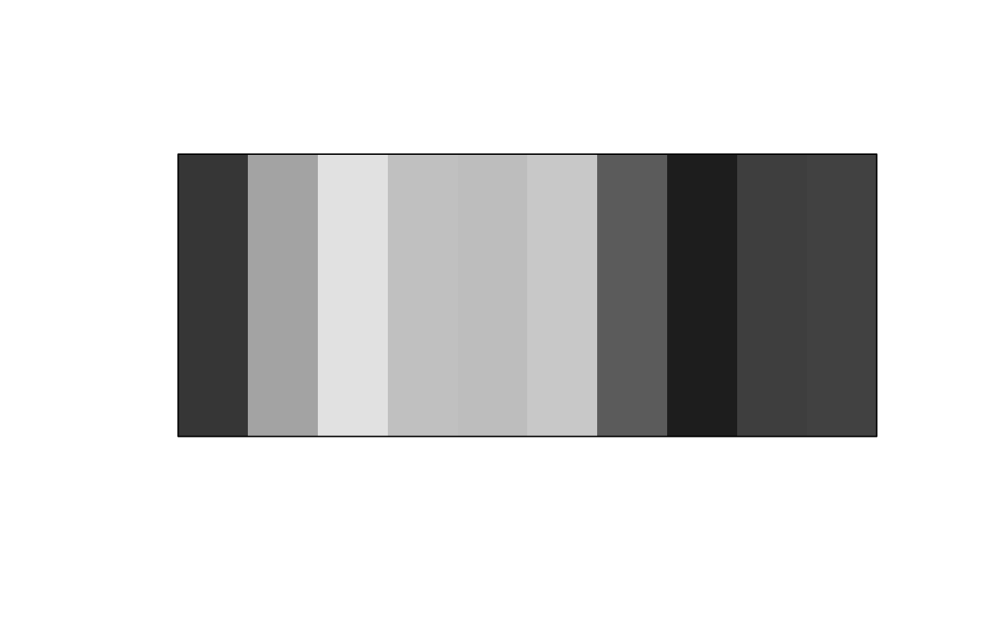

This function has a selection of different methods to turn colors into grayscale.
Arguments
- col
a color object or vector of any of the three kinds of R color specifications, i.e., either a color name (as listed by colors()), a hexadecimal string of the form "#rrggbb" or "#rrggbbaa" (see rgb), or a positive integer i meaning palette()[i].
- method
character string specifying the grayscaling method. Can be one of "luma", "averaging", "min_decomp", "max_decomp", "red_channel", "green_channel" and "blue_channel". Defaults to "luma".
Details
if method = "averaging" then the red, green and blue have been averaged together to create the grey value. This method does a poor job of representing the way the human eye sees color. If method = "luma" (the default) then then a weighted average is used to calculate the grayscale values. The BT. 709 method from the ITU Radiocommunication Sector have determined the weights. It method = "min_decomp" or method = "max_decomp", then a decomposition method is used where the minimum or maximum color value have been selected for the color value. So the color rgb(60, 120, 40) would have the min_decomp value of 40 and max_decomp value of 120. If method is "red_channel", "green_channel" or "blue_channel", then the corresponding color channel been selected for the values of grayscale.
Examples
plot(clr_grayscale(rainbow(10)))

plot(clr_grayscale(terrain.colors(10)))
 viridis_colors <- c(
"#4B0055FF", "#422C70FF", "#185086FF", "#007094FF",
"#008E98FF", "#00A890FF", "#00BE7DFF", "#6CD05EFF",
"#BBDD38FF", "#FDE333FF"
)
plot(clr_grayscale(viridis_colors, method = "luma"))
viridis_colors <- c(
"#4B0055FF", "#422C70FF", "#185086FF", "#007094FF",
"#008E98FF", "#00A890FF", "#00BE7DFF", "#6CD05EFF",
"#BBDD38FF", "#FDE333FF"
)
plot(clr_grayscale(viridis_colors, method = "luma"))
 plot(clr_grayscale(viridis_colors, method = "averaging"))
plot(clr_grayscale(viridis_colors, method = "averaging"))
 plot(clr_grayscale(viridis_colors, method = "min_decomp"))
plot(clr_grayscale(viridis_colors, method = "min_decomp"))
 plot(clr_grayscale(viridis_colors, method = "max_decomp"))
plot(clr_grayscale(viridis_colors, method = "max_decomp"))
 plot(clr_grayscale(viridis_colors, method = "red_channel"))
plot(clr_grayscale(viridis_colors, method = "green_channel"))
plot(clr_grayscale(viridis_colors, method = "blue_channel"))
plot(clr_grayscale(viridis_colors, method = "red_channel"))
plot(clr_grayscale(viridis_colors, method = "green_channel"))
plot(clr_grayscale(viridis_colors, method = "blue_channel"))